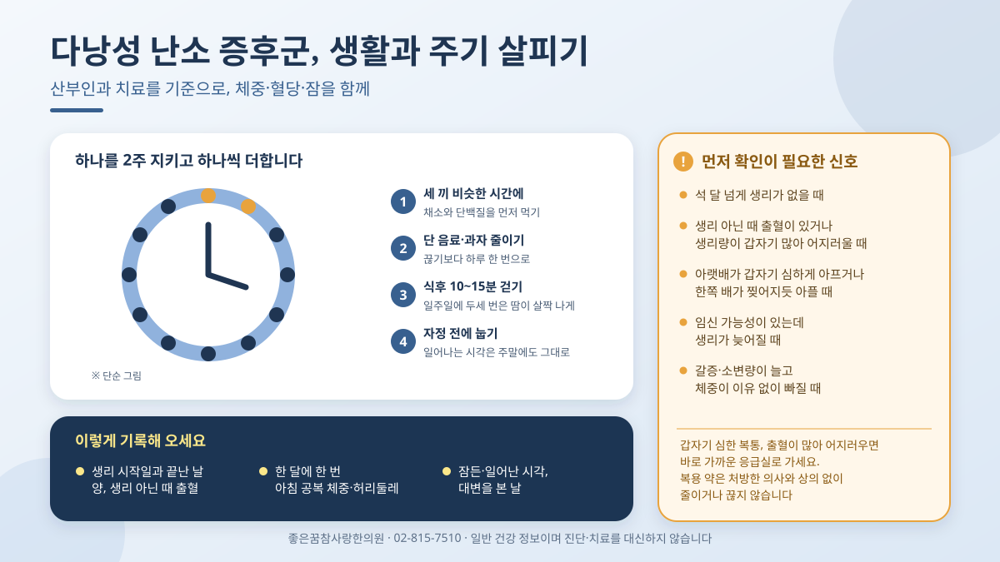

이종호 한의사 감수좋은꿈참사랑한의원 대표원장 (한의사 면허번호 19769)발행 2026-11-26 · 수정 2026-11-26
이 글의 차례
달력 앱을 열어 봅니다. 마지막 생리가 언제였는지 손가락으로 거슬러 올라가다 보니 벌써 석 달 가까이 되었습니다. 턱에는 여드름이 올라오고, 식사량은 그대로인데 배 둘레만 늘어 갑니다. 검사에서 다낭성 난소 증후군이라는 말을 들은 지는 몇 해가 지났습니다.
다낭성 난소 증후군이 있을 때는 산부인과 진단과 치료를 기준으로 삼고, 그 위에서 체중과 혈당, 잠, 대변 리듬 같은 생활을 함께 살피는 것이 순서입니다. 다만 석 달 넘게 생리가 없거나, 생리가 아닌 때 출혈이 있거나, 출혈량이 갑자기 많아졌다면 산부인과 확인이 먼저입니다.
진료실에서 이런 말씀을 자주 듣습니다. 약을 먹을 때만 생리를 하고, 끊으면 다시 소식이 없다고요. 살을 빼라는 말을 들었는데, 그게 얼마나 어려운지 아무도 모르는 것 같아 서운했다는 분도 계십니다.
다낭성 난소 증후군은 한 번에 끝나는 병이라기보다 오래 함께 다루어 가는 몸의 성향에 가깝습니다. 그래서 조급해지기 쉽고, 지치기도 쉽습니다. 여기까지 혼자 애써 오셨다면, 이제부터는 기준을 나누어 함께 보겠습니다.
왜 생리 주기가 흔들릴까요
정상적인 주기에서는 한 달에 난포 하나가 자라 배란이 되고, 그 뒤 생리가 옵니다. 다낭성 난소 증후군에서는 여러 개의 작은 난포가 자라다 멈추고 배란이 잘 일어나지 않아, 생리가 늦어지거나 몇 달씩 건너뛰게 됩니다.
이 과정에는 남성호르몬과 인슐린이 함께 얽혀 있다고 알려져 있습니다. 인슐린이 잘 듣지 않는 상태가 되면 몸은 인슐린을 더 많이 내보내고, 이것이 난소에서 남성호르몬을 늘려 배란을 방해하는 고리가 생깁니다. 체중이 정상인 분에게도 이런 경향이 있을 수 있습니다.
그래서 다낭성 난소 증후군은 생리만의 문제가 아니라 대사의 문제와 맞닿아 있습니다. 나중에 혈당이나 콜레스테롤, 수면 무호흡 같은 문제가 생기기 쉬운 쪽으로 알려져 있어, 생리 주기와 함께 몸 전체를 오래 지켜보는 것이 좋습니다.
한의학에서는 이런 모습을 몸에 노폐물과 습이 쌓여 흐름이 막힌 상태, 또는 기혈이 부족해 주기를 이어 갈 힘이 모자란 상태 등으로 나누어 봅니다. 같은 진단명이라도 몸 상태는 사람마다 꽤 다릅니다.
진단은 산부인과에서, 기준을 먼저 압니다
다낭성 난소 증후군은 보통 세 가지 가운데 두 가지 이상이 있고 다른 원인이 배제될 때 진단합니다. 배란이 드물거나 없는 것, 여드름·털이 늘거나 혈액 검사에서 남성호르몬이 높은 것, 초음파에서 작은 난포가 많이 보이는 것입니다.
갑상선 질환이나 프로락틴이라는 호르몬 이상도 생리를 멈추게 할 수 있어, 산부인과에서는 이를 함께 확인합니다. 그래서 생리가 불규칙하다고 스스로 다낭성이라고 단정하기보다 검사로 확인하는 것이 먼저입니다.
초경 뒤 몇 년 동안은 원래 주기가 들쭉날쭉한 경우가 많아, 10대에는 성인과 같은 기준을 그대로 쓰지 않고 더 신중하게 진단합니다. 다만 초경 뒤 몇 해가 지나도 석 달 넘게 소식이 없거나, 여드름·털 변화가 함께 뚜렷하다면 그냥 두지 말고 소아청소년과나 산부인과에서 확인을 받아 보세요.
생리 주기 자체가 흔들리는 일반적인 이유는 체중이 갑자기 늘거나 줄고 나서 생리 주기가 불규칙해졌을 때는 어떻게 하나요?에 정리해 두었습니다.
산부인과에서 피임약이나 혈당을 조절하는 약, 배란을 돕는 약을 처방받으셨다면 그 치료가 기준입니다. 한의원 진료를 함께 받더라도 처방받은 약은 처방한 의사와 상의 없이 끊거나 줄이지 않습니다.
체중·혈당·잠, 세 가지를 나누어 봅니다
체중
체중이 많이 나가는 분이라면 지금 체중의 5% 남짓만 줄어도 생리 주기가 달라질 수 있다고 알려져 있습니다. 10kg을 빼야 한다는 생각보다, 석 달에 몇 kg이라는 작은 목표가 오래갑니다.
다만 체중계 숫자만 보지는 않습니다. 원내 인바디 770으로 체지방과 근육량을 나누어 보면, 같은 체중이라도 무엇을 먼저 챙길지가 달라집니다. 굶어서 빼는 방법은 오히려 주기를 더 흔들 수 있어 권하지 않습니다.
운동은 걷기와 함께 근력 운동을 조금씩 더해 보세요. 근육은 혈당을 쓰는 큰 창고라서, 허벅지와 엉덩이 근육을 쓰는 운동이 혈당 조절에 도움이 될 수 있습니다. 의자에서 앉았다 일어서기 열 번부터 시작해도 충분합니다.
혈당
식후에 쏟아지듯 졸리고, 단 것이 자주 당기고, 목 뒤나 겨드랑이 피부가 거뭇해진다면 인슐린이 잘 듣지 않는 신호일 수 있습니다. 원내에서는 당화혈색소 검사기로 최근 두세 달의 혈당 흐름을 참고할 수 있고, 수치가 높게 나오면 내과 진료를 먼저 안내합니다.
식사 순서를 채소와 단백질 먼저, 밥과 면은 나중으로 바꾸고, 식후 10~15분 걷는 것만으로도 혈당이 오르는 모양이 달라질 수 있습니다.
잠
잠이 짧거나 늦게 자는 생활은 식욕을 늘리고 혈당 조절을 어렵게 합니다. 저는 몇 시간 자는지보다 몇 시에 잠드는지가 더 궁금합니다.
늦은 저녁과 야식도 함께 봅니다. 잠들기 직전에 먹으면 밤사이 혈당과 인슐린이 쉬지 못하고, 다음 날 아침 입맛과 식욕까지 흔들리기 쉽습니다. 저녁은 잠들기 세 시간 전에 마치는 것을 목표로 해 보세요. 코를 심하게 골고 낮에 자꾸 졸린다면 수면 무호흡 검사도 생각해 보세요.
마음도 함께 봅니다
다낭성 난소 증후군이 있는 분들은 여드름이나 털, 체중 때문에 거울 앞에서 마음이 무거워지는 날이 많습니다. 불안하거나 기분이 가라앉는 일이 더 흔하다는 보고도 있습니다. 그것은 의지가 약해서가 아니라 몸이 겪는 변화가 그만큼 크다는 뜻입니다.
살을 빼라는 말을 여러 번 들으면, 어느 순간 먹는 것 자체가 죄처럼 느껴지기도 합니다. 그렇게 굶다가 몰아서 먹고, 다시 자책하는 고리가 생기면 혈당도 마음도 더 흔들립니다. 저는 체중 이야기보다 그 고리를 먼저 함께 풀어 보고 싶습니다.
머리카락이 가늘어지거나 털이 늘어 고민이라면 피부과 상담도 함께 받아 보세요. 겉으로 드러나는 변화를 다루는 방법이 따로 있고, 마음의 짐을 덜어 주는 데 도움이 됩니다.
임신 준비와의 관계
다낭성 난소 증후군이 있다고 해서 임신이 어렵다고 단정할 수는 없습니다. 배란이 드물어 시간이 더 걸릴 수 있다는 뜻에 가깝고, 산부인과에서 배란을 돕는 치료를 받으며 준비하는 분이 많습니다.
AMH 수치를 듣고 걱정하시는 분도 많습니다. 다낭성에서는 이 수치가 높게 나오는 경우가 흔하고, 숫자 하나로 몸 전체를 판단하지는 않습니다. 검사 결과지는 그대로 가져와 주시면 함께 읽어 드립니다.
대표원장은 동작구 한의약 난임치료 지원사업 지정 한의사입니다. 지원 대상과 조건은 해마다 달라질 수 있어 동작구 보건소에 확인해 주세요.
알아보는 방법은 동작구 한의약 난임치료 지원사업은 어떻게 알아보나요?에 적어 두었습니다.
임신 준비 전반은 아이를 갖고 싶어 진료를 받을 때 한의원에 무엇을 알려야 하나요?를 함께 보세요.
임신을 준비하는 동안에는 한약이나 침 치료 일정도 산부인과 치료 일정에 맞추어 정합니다. 배란 유도나 시술을 앞두고 있다면 그 날짜를 미리 알려 주세요. 임신이 확인되면 그때부터는 산부인과 진료를 중심으로 하고, 한의원에서는 드시던 것을 다시 점검합니다.
예를 들면 이런 경우입니다
실제 어느 분의 사연이 아니라, 진료실에서 자주 보는 모습을 바탕으로 그려 본 장면입니다.
예를 들어 야근이 잦아 새벽 한두 시에 잠들고, 저녁을 늦게 몰아서 먹으며, 생리가 두세 달에 한 번 오는 경우가 있습니다. 이럴 때는 체중보다 잠드는 시각과 저녁 식사 시각을 먼저 적어 보시라고 말씀드립니다.
예를 들어 마른 편인데 다낭성이라는 말을 듣고, 무엇을 더 줄여야 할지 몰라 끼니를 오히려 줄여 온 경우도 있습니다. 이때는 굶는 쪽보다 끼니를 고르게 챙기고 근육을 쓰는 쪽으로 방향을 돌리며, 체성분을 함께 봅니다.
예를 들어 임신을 준비하며 산부인과에서 배란을 돕는 치료를 시작했는데, 마음이 조급해 잠이 얕아지고 대변도 며칠씩 밀리는 경우도 있습니다. 산부인과 일정은 그대로 두고, 그 사이 잠과 소화, 마음의 긴장을 함께 살핍니다.
스스로 점검해 보세요
- 생리 간격이 35일보다 길거나, 1년에 여덟 번이 안 된다
- 턱이나 입 주변에 여드름이 잦고, 털이 늘었다고 느낀다
- 식후에 쏟아지듯 졸리고 단 것이 자주 당긴다
- 배 둘레가 늘었고 체중이 잘 줄지 않는다
- 자정 넘어 잠드는 날이 일주일에 세 번 이상이다
- 대변이 사흘 넘게 밀리는 날이 잦다
점수를 매기려는 목록은 아닙니다. 진단은 산부인과에서 받으시고, 해당하는 줄에 표시해 오시면 그 줄부터 이야기를 시작하겠습니다.
얼마나 지켜보고, 언제 다시 확인하나요
생활을 바꾼 효과를 몸이 보여 주기까지는 시간이 걸립니다. 저는 석 달을 한 단위로 보시라고 말씀드립니다. 생리 주기 세 번, 체중과 허리둘레 세 번을 적으면 어느 쪽으로 움직이는지 보이기 시작합니다.
다낭성 난소 증후군이 있다면 해마다 한 번쯤은 혈당과 콜레스테롤, 혈압을 확인해 두시는 것이 좋습니다. 생리가 잘 오고 있더라도 마찬가지입니다. 검사 결과가 바뀌면 그 결과지를 들고 오셔서 함께 보면 됩니다.
먼저 이렇게 여쭙니다
- 언제, 어디서 다낭성 난소 증후군이라는 말을 들었는지, 지금 받는 치료는 무엇인지
- 최근 6개월의 생리 시작일과 가장 최근 생리가 언제였는지
- 임신 가능성이 있는지, 지금 임신을 준비 중인지
- 최근 1년 사이 체중 변화와 식후 졸림, 단 것 당김이 어떤지
- 몇 시에 잠들고 몇 번 깨는지, 대변은 며칠에 한 번인지
- 여드름이나 털, 머리카락 빠짐에 변화가 있는지
드시는 약과 영양제는 이름을 모두 적어 오세요. 영양제도 다른 약과 겹치거나 임신 준비에 영향을 줄 수 있어, 처방한 의사와 상의한 내용이 있다면 함께 말씀해 주세요.
일상에서 먼저 해 볼 수 있는 것
- 세 끼를 비슷한 시간에 먹고, 한 끼에 채소와 단백질을 먼저 먹기
- 단 음료와 과자는 '끊기'보다 '하루 한 번으로 줄이기'부터 시작하기
- 식후 10~15분 걷기, 일주일에 두세 번은 땀이 살짝 날 만큼 움직이기
- 자정 전에 눕고, 일어나는 시각을 주말에도 크게 바꾸지 않기
- 물과 채소를 챙겨 대변이 이틀 넘게 밀리지 않게 하기
한꺼번에 다 바꾸려 하면 지치기 쉽습니다. 저는 큰 목표를 잘 드리지 않는 편입니다. 이 가운데 하나만 2주 동안 지켜 보시고, 몸에 붙으면 하나를 더해 가세요.
한의원에서 함께 살필 수 있는 경우
- 산부인과 치료를 받으면서 생활 관리와 몸 상태를 함께 상의하고 싶은 경우
- 체중과 식욕 조절이 어렵고 식후 졸림, 붓기, 피로가 함께 있는 경우
- 생리 주기와 함께 잠, 소화, 대변 리듬이 흔들리는 경우
- 임신을 준비하며 몸 상태를 점검하고 싶은 경우(산부인과 진료와 함께)
좋은꿈참사랑한의원에 처음 오시면 산부인과에서 들은 진단과 지금 받는 치료부터 확인하고, 아래의 먼저 확인할 신호가 없는지 살핍니다. 그다음 양손을 올려 주시면 맥을 짚으며 잠과 식욕, 소화, 대변, 생리 이야기를 여쭙고, 필요하다고 판단될 때 혀도 봅니다.
필요하면 인바디로 체성분을 보고, 당화혈색소를 참고합니다. 이렇게 살핀 내용을 바탕으로 침, 한약 상담, 생활 관리 가운데 지금 몸에 맞는 방법을 함께 정합니다. 산부인과 치료와 일정이 겹치면 그 일정을 먼저 존중합니다.
다시 오시면 지난번 이후 생리가 있었는지, 잠드는 시각과 식후 걷기를 며칠이나 지켰는지부터 이어서 여쭙습니다.
이렇게 기록해 오시면 상담이 쉬워집니다
다낭성 난소 증후군은 몇 달 단위로 보아야 흐름이 보입니다. 생리 앱에 날짜만 적지 마시고 아래를 함께 적어 보세요.
- 생리 시작일과 끝난 날, 양(많음·보통·적음), 생리가 아닌 때 출혈 여부
- 한 달에 한 번 같은 조건(아침 공복)에서 잰 체중과 허리둘레
- 식후 졸림이 심했던 날과 그날 먹은 것
- 잠든 시각과 일어난 시각, 대변을 본 날
- 산부인과 검사 날짜와 결과, 처방받은 약의 시작·변경 날짜
기록이 들쭉날쭉해도 괜찮습니다. 석 달치만 모여도 몸이 어떤 쪽으로 흔들리는지 함께 볼 수 있습니다.
생리 날짜만 적어 두셔도 시작으로는 충분합니다. 바쁜 달에는 한 줄, 여유 있는 달에는 몇 줄 더 적는 식으로 편하게 이어 가세요.
이런 증상은 먼저 확인이 필요합니다
- 석 달 넘게 생리가 없는 경우
- 생리가 아닌 때 출혈이 있거나, 생리량이 갑자기 많아져 어지러운 경우
이런 신호가 있으면 한의원보다 가까운 병원이나 응급실을 먼저 찾으세요.
진단명을 들은 날부터 몸이 숙제처럼 느껴지셨을지도 모릅니다. 그래도 몸은 하루하루의 작은 리듬에 반응합니다. 그 리듬을 함께 맞추어 보겠습니다. 다음에 오시면 지난 석 달 동안 생리가 언제 왔는지부터 여쭙겠습니다.

여쭙는 것
- 언제, 어디서 다낭성 난소 증후군이라는 말을 들었는지, 지금 받는 치료는 무엇인지
- 최근 6개월의 생리 시작일과 가장 최근 생리가 언제였는지
- 임신 가능성이 있는지, 지금 임신을 준비 중인지
생활에서 해 볼 것
- 세 끼를 비슷한 시간에 먹고, 한 끼에 채소와 단백질을 먼저 먹기
- 단 음료와 과자는 '끊기'보다 '하루 한 번으로 줄이기'부터 시작하기
- 식후 10~15분 걷기, 일주일에 두세 번은 땀이 살짝 날 만큼 움직이기
한의원에서 함께 살필 것
- 산부인과 치료를 받으면서 생활 관리와 몸 상태를 함께 상의하고 싶은 경우
- 체중과 식욕 조절이 어렵고 식후 졸림, 붓기, 피로가 함께 있는 경우
- 생리 주기와 함께 잠, 소화, 대변 리듬이 흔들리는 경우
먼저 확인이 필요한 신호
- 석 달 넘게 생리가 없는 경우
- 생리가 아닌 때 출혈이 있거나, 생리량이 갑자기 많아져 어지러운 경우
한눈에 보는 표
| 구분 | 핵심 |
|---|---|
| 여쭙는 것 | 언제, 어디서 다낭성 난소 증후군이라는 말을 들었는지, 지금 받는 치료는 무엇인지 최근 6개월의 생리 시작일과 가장 최근 생리가 언제였는지 |
| 생활에서 해 볼 것 | 세 끼를 비슷한 시간에 먹고, 한 끼에 채소와 단백질을 먼저 먹기 단 음료와 과자는 '끊기'보다 '하루 한 번으로 줄이기'부터 시작하기 |
| 한의원에서 함께 살필 것 | 산부인과 치료를 받으면서 생활 관리와 몸 상태를 함께 상의하고 싶은 경우 체중과 식욕 조절이 어렵고 식후 졸림, 붓기, 피로가 함께 있는 경우 |
| 먼저 확인이 필요한 신호 | 석 달 넘게 생리가 없는 경우 생리가 아닌 때 출혈이 있거나, 생리량이 갑자기 많아져 어지러운 경우 |
자주 묻는 질문
다낭성 난소 증후군도 한의원에서 진료를 받을 수 있나요?
진단과 기본 치료는 산부인과가 기준입니다. 한의원에서는 그 치료를 확인한 뒤 잠, 식욕, 소화, 대변 같은 몸 전체의 리듬을 함께 살피고 침과 한약 상담, 생활 관리를 상의합니다.
마른 편인데도 다낭성이라고 들었어요. 살을 빼야 하나요?
체중이 정상이거나 마른 분에게도 다낭성 난소 증후군이 있을 수 있습니다. 이때는 체중보다 끼니와 잠, 근육량, 혈당 흐름을 먼저 살핍니다.
피임약을 먹고 있는데 한약을 같이 먹어도 되나요?
드시는 약 이름을 알려 주시면 함께 확인하고 상의합니다. 처방받은 약은 처방한 의사와 상의 없이 끊거나 줄이지 마세요.
난임치료 지원사업은 어떻게 신청하나요?
대표원장은 동작구 한의약 난임치료 지원사업 지정 한의사입니다. 지원 대상과 조건은 동작구 보건소에 먼저 확인해 주세요.
좋은꿈참사랑한의원은 재진 때 지난번 이야기부터 이어서 여쭙니다. 진료시간과 예약은 오시는 길에서 확인하세요.
어디서 상담받을 수 있나요?
좋은꿈참사랑한의원은 서울 동작구 만양로2길 2 신성빌딩 3층·5층(서울 동작구 상도동, 7호선 상도역 3번 출구 근처)에 있습니다. 한의사 3명(이종호 대표원장, 조영기 수석진료원장, 정원영 진료원장)이 진료합니다. 진료시간은 평일 09:30~20:00(점심 13:00~14:00), 토·일·공휴일 09:30~15:00이며, 방문 전 전화로 확인을 권합니다. 예약은 네이버 예약, 카카오톡 상담, 전화 02-815-7510로 받습니다.
이 글은 일반적인 건강 정보이며 개인의 진단이나 치료를 대신하지 않습니다. 증상이 있거나 복용 중인 약이 있다면 진료를 통해 확인하세요. 치료 효과는 개인마다 다를 수 있습니다.
작성 기준: 일반적으로 알려져 있는 건강 정보를 참고해 정리했습니다(대표원장 감수). 증상 기록은 1~2주 동안 하루 1회, 비슷한 시간에 적어 오시면 지난 상태와 비교하기 쉽습니다.